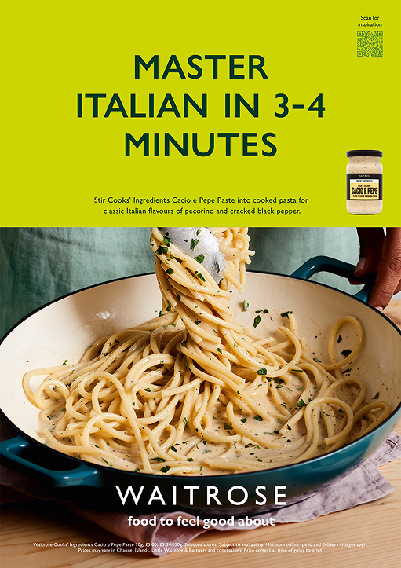

Shot at Narroway Studios by the wonderfully talented Issy Crocker, Cooks' Ingredients is a product campaign for Waitrose built around five routes of beautiful still life photography, each paired with a simple, witty headline that lets the product do the talking.
My role covered the full production of the shoot, working closely with the creative team to ensure each route felt considered, consistent. I also took my duties as honorary food tester very seriously.

Agency: adam&eveDDB
Creatives: Frances Leach & Chris Bowsher
Photographer: Issy Crocker
Production: Richard Bailey
Account Team: Jono Shaw & Scarlett Aldridge